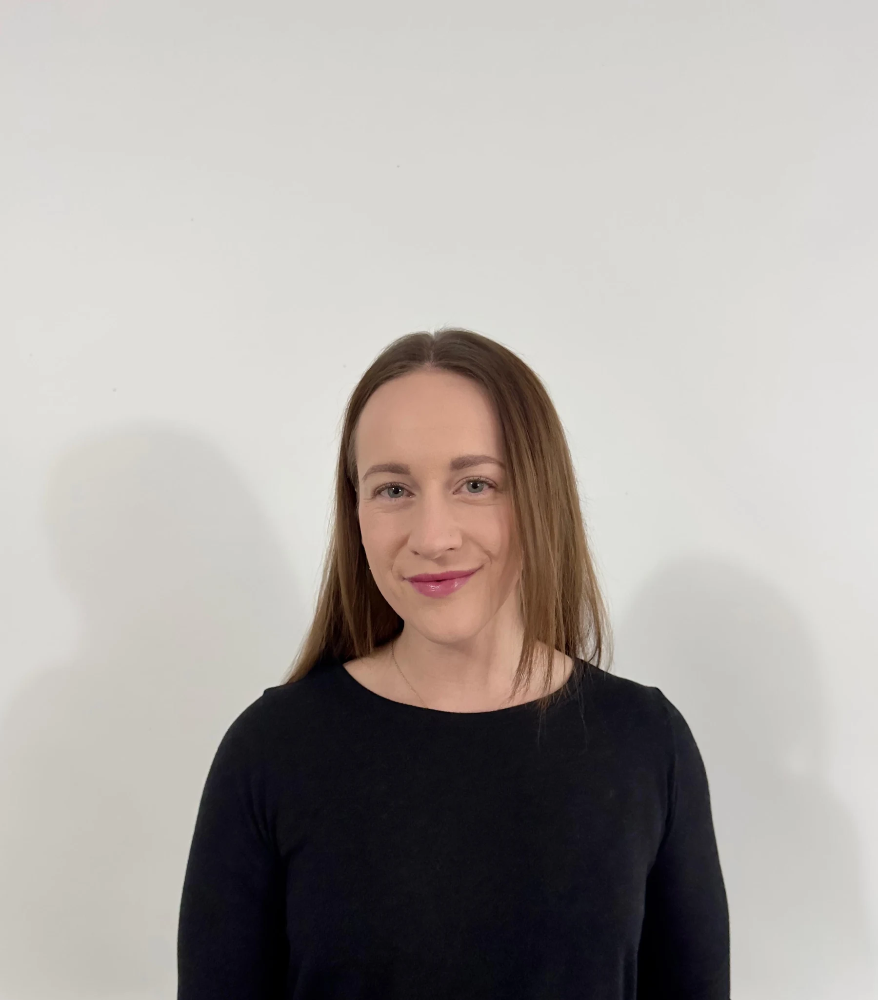
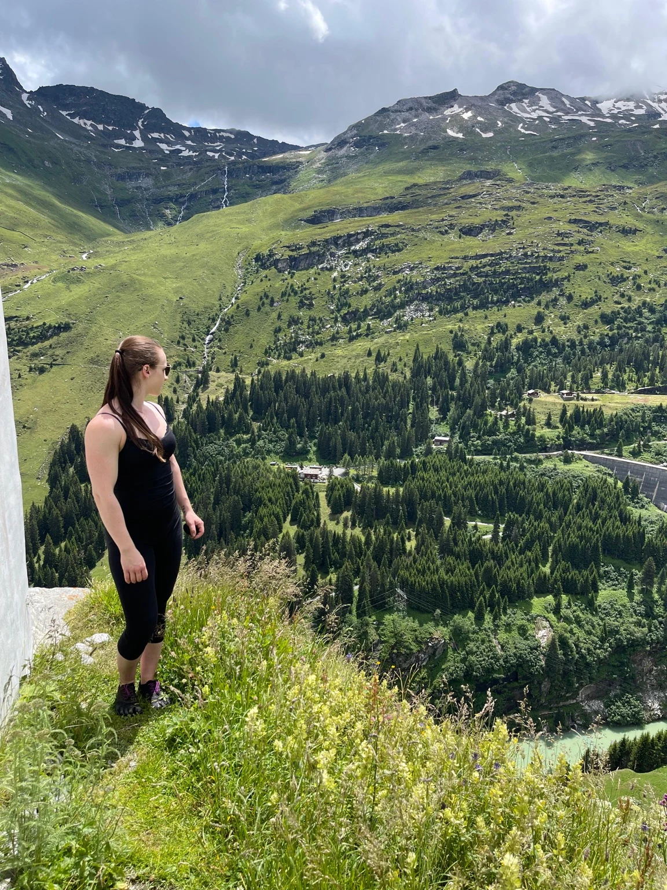

Dein Körper.
Deine Ziele.
Deine Balance.
Training, Ernährung und Wohlbefinden gehören zusammen. Ich begleite dich dabei, deinen eigenen Weg zu finden – mit Raum für deinen Alltag und das, was dir wichtig ist.
Für Frauen und Männer · Individuell statt nach Schema

Beides darf sein.
Dein Weg zu mehr Balance
Du bist mehr
als ein einzelnes Ziel.
Vielleicht möchtest du stärker werden. Vielleicht suchst du Orientierung bei deiner Ernährung oder möchtest deine Bedürfnisse besser wahrnehmen. Gemeinsam schauen wir auf das Ganze.
Training, das zu dir passt.
Vom einzelnen Trainingsplan bis zur Trainingsperiodisierung über zwölf Monate – abgestimmt auf deine Ziele und deinen Alltag.
Ernährung mit Raum für Genuss.
Lebensmittel, Gewohnheiten und Supplemente sinnvoll zusammenbringen.
Deine Balance. Deine Leistungsfähigkeit.
Für Frauen und Männer: Wohlbefinden in Alltag, Beruf und Training. Mit Blick auf Regeneration, Supplemente und hormonbezogene Lifestyle-Fragen.

Hallo, ich bin Tatjana.
Erfahrung im Training.
Ein offenes Ohr für dich.
Seit über 15 Jahren gehört Kraftsport zu meinem Leben. Ernährung, Bewegung und meine eigenen Erfahrungen mit zyklusbedingtem Wohlbefinden haben meinen Blick auf Coaching geprägt.
Mir ist wichtig, dich als Menschen kennenzulernen – mit deinen Zielen, deinen Möglichkeiten und deinem Alltag.
Lerne mich kennenWissen & Alltag / erstes Rezept
Balance darf
nach Schokolade schmecken.
Dattel-Schoko-Muffins mit Mandeln, Datteln und einer cremigen Ganache. Ein Rezept für kleine Genussmomente.
Zum Rezept ↗
Dein nächster Schritt
Finden wir heraus,
was zu dir passt.
Erzähl mir, wo du stehst und was du verändern möchtest.
Beratungsgespräch anfragen ↗